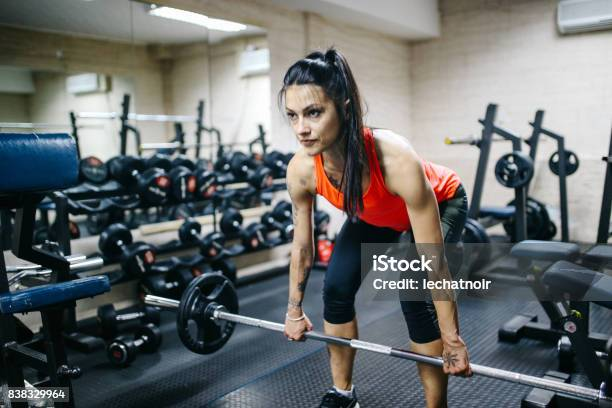

O Leg Press é muito eficiente para trabalhar com os músculos do quadríceps e dos isquiotibiais (quando utilizada uma amplitude maior).
Os pés devem ser apoiados de forma a ficar alinhados com os quadris.
Comece com a postura correta e as chances de executar corretamente aumentam.
Os joelhos devem ser flexionados em um ângulo de 90 graus. Sem colar os joelhos no corpo.
Empurre a plataforma e retorne a postura anterior.
Agachamento no Smith
O Que treina o Agachamento no Smith
O agachamento smith serve para aumentar a massa e a força muscular da parte inferior do corpo, principalmente dos músculos quadríceps e isquiotibiais na coxa e os glúteos.
Posicionar-se em pé dentro da máquina Smith, com as pernas afastadas na largura dos quadris e os pés apontados para frente;
Dar um pequeno passo à frente, pois os pés devem estar posicionados um pouco à frente do corpo;
Posicionar as mãos na barra, uma em cada lado, com os cotovelos alinhados com o corpo, É importante ter o cuidado para não apoiar a barra nas vértebras do pescoço para evitar lesões;
Soltar a trava de segurança da máquina Smith, esticando as pernas para cima;
Inspirar e fazer um movimento de “descida”, dobrando as pernas, até que as coxas fiquem em paralelo com o chão;
Expirar, fazendo o movimento de “subida” lentamente;
Voltar à posição inicial
Stiff
O Que treina o Stiff
Stiff é um exercício que serve para fortalecer e aumentar a massa muscular dos glúteos, parte de trás das coxas e panturrilhas, além de ajuda a fortalecer a lombar, parte superior das costas e abdômen, podendo ser feito com halteres ou barra com pesos.

Ficar de pé com a barra nas mãos, com os pesos confortáveis para você.
Manter os pés apoiados no solo alinhados aos ombros.
Flexionar o tronco até a barra alcançar a altura da canela.
Retornar à posição inicial e refazer o movimento, lembrando-se de sempre manter a postura.
Cadeira Extensora
O Que treina a Cadeira Extensora
A Cadeira extensora e um exercício para membros
inferiores especialmente para quadríceps, e Aumento da
força muscular, Hipertrofia (ganho muscular);
Fortalecimento muscular, Ganho de resistência.
Sente-se na cadeira, regule o banco de acordo com a sua altura e deixe as costas apoiadas. A parte inferior dos joelhos deve estar localizada na dobra da cadeira;
Mantenha as solas dos pés retas;
Dessa forma, coloque a carga que será utilizada;
Inicie o movimento estendendo o joelho (mas sem causar hiperextensão), contraindo as coxas;
Volte à posição inicial lentamente e faça o número de repetições e séries recomendado.